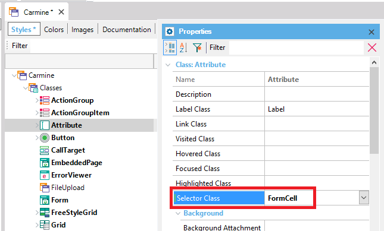
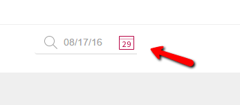

It allows specifying the Theme class to style the selector button in an attribute or variable (it can be a datepicker selector, prompt or geolocation). DescriptionThe Theme Class to associate with the Selector Class property should be a Section class.  ExampleThe Date Picker selector can be configured through this property.  ScopeObjects: Theme
|